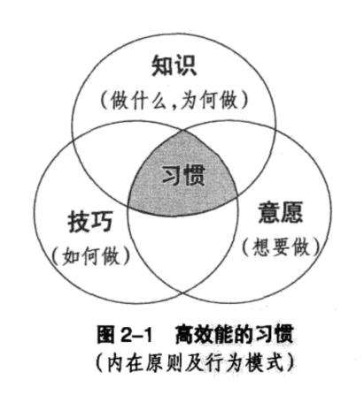
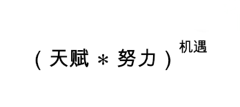
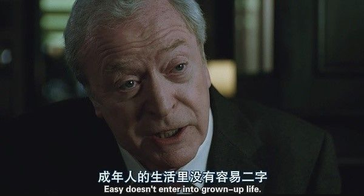
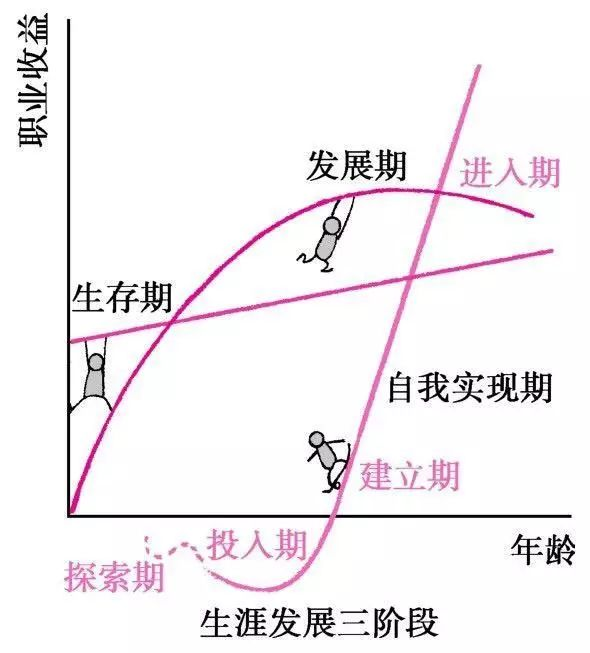
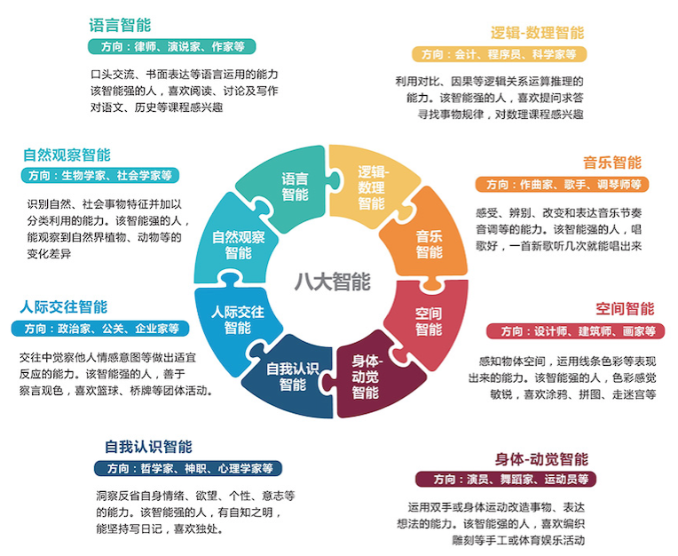
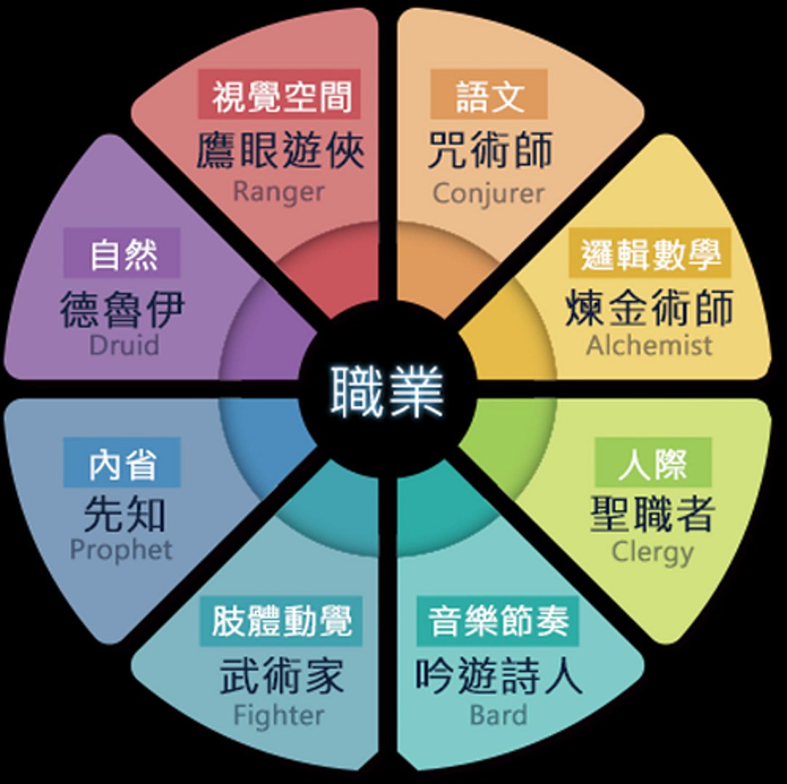
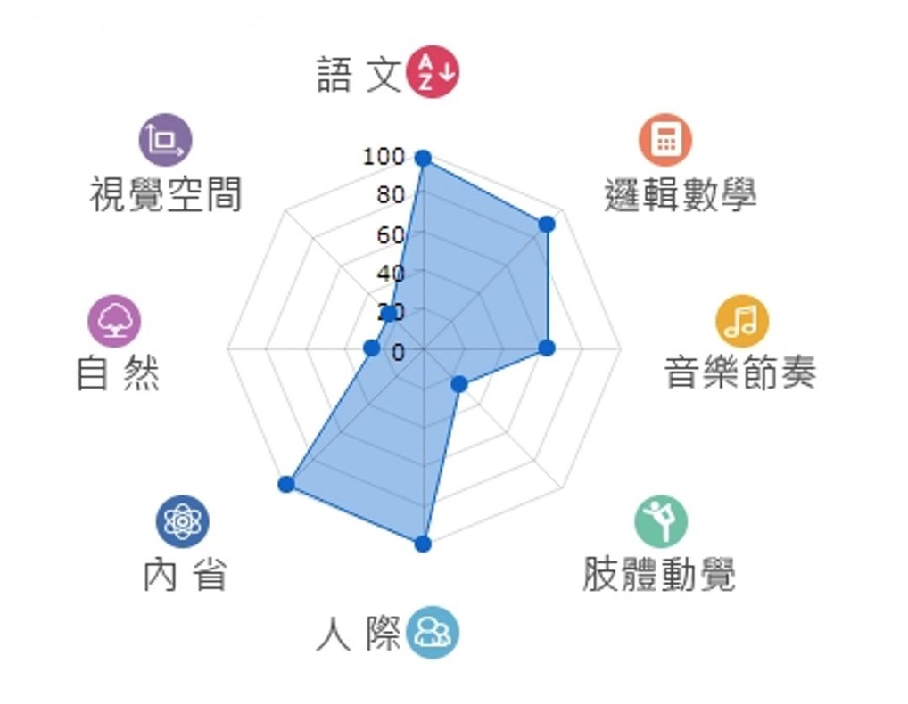

<!DOCTYPE html><html><head><meta name="generator" content="Hexo 3.8.0"><meta charset="utf-8"><meta http-equiv="X-UA-Compatible" content="chrome=1"><title>中年危机</title><meta name="viewport" content="width=device-width, initial-scale=1, maximum-scale=1, user-scalable=no"><meta name="author" content="ronesam"><meta name="description" content="给自己的忠告：  若想改变世界，请先改变自己 若要站着赚钱，就要跪着学习 人生有两个误区：一是活给别人看，二是看别人怎么活">
<meta property="og:type" content="article">
<meta property="og:title" content="中年危机">
<meta property="og:url" content="https://ronesam.com/about/midlife-crisis/index.html">
<meta property="og:site_name" content="全栈开发之旅">
<meta property="og:description" content="给自己的忠告：  若想改变世界，请先改变自己 若要站着赚钱，就要跪着学习 人生有两个误区：一是活给别人看，二是看别人怎么活">
<meta property="og:locale" content="zh-CN">
<meta property="og:image" content="http://static.ronesam.com/about/midlife-crisis/命运之轮.png">
<meta property="og:updated_time" content="2019-02-14T09:03:38.288Z">
<meta name="twitter:card" content="summary">
<meta name="twitter:title" content="中年危机">
<meta name="twitter:description" content="给自己的忠告：  若想改变世界，请先改变自己 若要站着赚钱，就要跪着学习 人生有两个误区：一是活给别人看，二是看别人怎么活">
<meta name="twitter:image" content="http://static.ronesam.com/about/midlife-crisis/命运之轮.png"><link rel="icon" type="image/x-icon" href="//static.ronesam.com/zero/img/favicon.ico"><link rel="stylesheet" href="//static.ronesam.com/vendor/bootstrap/3.3.5/css/bootstrap.min.css"><link rel="stylesheet" href="//static.ronesam.com/vendor/font-awesome/4.4.0/css/font-awesome.min.css"><link rel="stylesheet" href="//static.ronesam.com/vendor/remodal/1.0.5/remodal.min.css"><link rel="stylesheet" href="//static.ronesam.com/vendor/remodal/1.0.5/remodal-default-theme.min.css"><link rel="stylesheet" href="//static.ronesam.com/vendor/gitment/0.0.3/default.css"><!--如果文章中有图片（除画廊外），则载入fancybox特效相关样式--><link rel="stylesheet" href="//static.ronesam.com/vendor/fancybox/2.1.5/jquery.fancybox.min.css"><link rel="stylesheet" href="//static.ronesam.com/zero/css/style.css"><script src="//static.ronesam.com/vendor/jquery/2.1.4/jquery.min.js"></script></head><body><div class="wrapper"><header id="header"><div class="title"><h1><a href="/">全栈开发之旅</a></h1><p class="fa fa-angellist"><a href="/">学以致用, 刻意练习, 知行合一</a></p></div><nav class="nav"><ul><li><a href="/work/summary/">Work</a></li><li><a href="/think/summary/">Think</a></li><li><a href="/about/summary/">关于</a></li></ul><div class="clearfix"></div></nav><div class="clearfix"></div></header><div class="content"><article class="post"><header><div class="icon"></div><a href="/about/midlife-crisis/"><time datetime="2018-12-28T04:22:49.000Z">2018-12-28</time></a><h1 class="title">中年危机</h1></header><div class="gallery"><div class="photoset"></div><div class="control"><div class="prev"></div><div class="next"></div></div></div><div class="entry"><blockquote><p>给自己的忠告：</p>
<ol>
<li>若想改变世界，请先改变自己</li>
<li>若要站着赚钱，就要跪着学习</li>
<li>人生有两个误区：一是活给别人看，二是看别人怎么活</li>
</ol>
</blockquote>
<a id="more"></a>
<h2 id="人到中年，最可悲的莫过于还要服从别人的安排，不能掌握自己的命运"><a href="#人到中年，最可悲的莫过于还要服从别人的安排，不能掌握自己的命运" class="headerlink" title="人到中年，最可悲的莫过于还要服从别人的安排，不能掌握自己的命运"></a>人到中年，最可悲的莫过于还要服从别人的安排，不能掌握自己的命运</h2><p>今年以来，我最大的收获就是明确了对命运的看法。</p>
<p>既不认为<code>“人定胜天”</code>，也不觉得<code>“一切都是天意，一切都是命运，亘古已注定”</code>。</p>
<p>我更倾向于<code>“性格决定命运”</code>。</p>
<p>或者说：<blockquote><p>认知决定思想，思想决定行为，行为决定习惯，习惯决定性格，性格决定命运。</p>
<footer><strong>史蒂芬·柯维</strong><cite><a href="https://item.jd.com/12352741.html?dist=jd" target="_blank" rel="noopener">高效能人士的七个习惯</a></cite></footer></blockquote><br>这句话我是这么理解的：认知（知识）、思想（意愿）、行为（技巧）的交集就是习惯。</p>

<p></p>
<p>习惯固化的外在表现给人的直观印象，就是性格。</p>
<p>本质上，性格由选择权和影响力两部分组成。</p>
<h3 id="选择权"><a href="#选择权" class="headerlink" title="选择权"></a>选择权</h3><p>俗语说：<code>“江山易改，本性难移”</code>。</p>
<p>还有说得比较难听的：<code>“狗改不了吃屎”</code>。</p>
<p>人们面临抉择的时候，总是倾向于做出符合自己性格的选择，这几乎是一定的。</p>
<p>然而，有些事情不是你想选就能选的，选择权的大小取决于天赋和努力的程度。</p>
<blockquote>
<p>选择权 = 天赋 * 努力</p>
</blockquote>
<p><code>“知之者不如好之者，好之者不如乐之者。”</code></p>
<p>天赋是指学习兴趣所在，努力是指刻意练习的频次。</p>
<p>不要夸大看待天赋，也不要片面强调努力。</p>
<blockquote>
<p>选择大于努力？</p>
</blockquote>
<p>如果说的是<code>“选择权大于努力”</code>，如上见解，那么就是没有问题的。</p>
<p>如果不是，那么就是一句正确而无用的废话。</p>
<p>如果可以选，我当然会选<code>富二代</code>啊！</p>
<p>所谓<code>“命该如此”</code>，每个人选择的时候，在不知道前途的情况下，只会做出符合自己性格的选择。</p>
<p>如果不是这么选的，往往过不了自己心理的关卡，迟早会出问题。</p>
<blockquote>
<p>命，就是最终选择</p>
</blockquote>
<p>古时候的<strong>“选择”</strong>，更多的时候是指<strong>“被动选择”</strong>，自己是做不得主的（没有<strong>选择权</strong>）。</p>
<p>在甲骨文里面，<strong>“命”</strong>和<strong>“令”</strong>其实是一个字。</p>
<p>上边是<code>铃形</code>，下边是跪着的<code>人形</code>：</p>
<p></p>
<p>古酋长发布命令时，先摇铃聚众，接受命令的人跪接指令。</p>
<p>因族人和奴隶无法抗拒酋长意志，只能听命，故引申命运、性命。</p>
<p></p>
<p>当人们真正意识到还可以<strong>“我命由我不由天”</strong>的时候，那已经是<strong>“王侯将相宁有种乎”</strong>之后很久了。</p>
<p>人的成长过程，同样也是从<strong>“被动选择”</strong>到<strong>“自我选择”</strong>的过程。</p>
<p>当你要求自己的孩子<strong>“乖，听话”</strong>的时候，有没有想过，这无非就是强制他服从<strong>“你的选择”</strong>。</p>
<p>而所谓的<strong>“叛逆期”</strong>，也只不过是他不想<strong>“被你选择”</strong>而已。</p>
<p>这才是真正成长的标志啊！</p>
<p><strong>“被动选择”</strong>的凭什么要认命？</p>
<p><strong>“自我选择”</strong>的为什么不认命？</p>
<p>人们只有习惯承受<strong>“自我选择”</strong>的责权利之后，才能“仰无愧于天，俯无愧于地，行无愧于人，止无愧于心”，做一个顶天立地的人。</p>
<h3 id="影响力"><a href="#影响力" class="headerlink" title="影响力"></a>影响力</h3><p>同时，性格之间也会出现明显的互斥或者互补的现象。</p>
<p>无论是“志同道合”（义）还是“臭味相投”（利），人们总是倾向于相互吸引在一起。</p>
<p>就像是天体一般，本质是势能的积累。</p>
<p>引力大的覆盖范围大，从概率上来讲，机遇也就越大。</p>
<blockquote>
<p>运，就是或好或坏、或大或小的机遇。</p>
</blockquote>
<p>运气好，怎么选都是对的；运气差，怎么选都是错的。</p>
<p>这让我不得不想起互联网上古时期的一则寓言：</p>
<blockquote>
<p>从前有三个人到非洲探险，不小心偷看到了一位酋长的女儿在洗澡。被抓后，酋长问第一个人想死还是想被弹鸡鸡，他当然回答说弹鸡鸡。于是被拉下去弹了50下， 惨叫……又问第二个人想死还是想被弹鸡鸡，他犹豫了一下，好死不如赖活，他也选择了弹鸡鸡，于是被拉下去弹了100下，极其刺耳恐怖的惨叫……被拖回来已经奄奄一息，而且鸡鸡好象已经完全废了。又问第三个人，想死还是想被弹鸡鸡。他犹豫半天，看看他们两个如此痛苦，而且东西也坏了，觉得选死也许会出现奇迹，起码没有那么痛苦啊，所以就壮烈的回答说：死。于是酋长说:“拉下去，弹鸡鸡弹到死。”</p>
</blockquote>
<p>嗯，要不为什么说，任何喜剧背后都有一个悲剧内核呢……</p>
<blockquote>
<p>机遇只留给有准备的人</p>
</blockquote>
<p>如果机遇太大，是你的选择权所不能覆盖的，那你也只能眼睁睁看它溜走，还有什么别的办法呢？只能继续加强自己的修养，等待下一次机遇的来临。</p>
<p>又或者说，机遇虽然很不错，符合社会的普遍预期，但却与你的性格不符合，那其实也并不适合你。就算一时接受，心灵却不再安乐，陷于理想与现实冲突的痛苦，唯有放手，才能摆脱折磨。</p>
<p>这就是：<strong>“命里有时终须有，命里无时莫强求。”</strong>。</p>
<p>正确的做法应该是：</p>
<blockquote>
<p>按照天赋来决定道路，在喜爱的道路上努力，然后等待独属于你的机遇的垂青。</p>
</blockquote>
<p></p>
<h2 id="事业才是中年人应该追求的根本"><a href="#事业才是中年人应该追求的根本" class="headerlink" title="事业才是中年人应该追求的根本"></a>事业才是中年人应该追求的根本</h2><p></p>
<p>毋庸置疑，中年危机大多是钱荒闹得。</p>
<p>年轻人也没钱，但他们还有希望，还有<strong>“三十年河东，三十年河西。莫欺少年穷。”</strong></p>
<p>中年人还有什么呢？</p>
<p>嗯，上有老，下有小，还有越来越不健康的身体，以及职业危机。</p>
<p></p>
<p>我们大多数人从事的工作并非自己所喜欢的。</p>
<p>但由于刻意练习的原因，不喜欢的工作，我们也可以努力做得很好。</p>
<p></p>
<p>有句话是这么说的：</p>
<blockquote>
<p>天赋决定了你能达到的上限，努力程度决定了你能达到的下限。以绝大多数人的努力程度之低，远远没有达到要去拼天赋的地步。</p>
</blockquote>
<p>35岁之前，这句话无疑是正确的。正所谓<strong>“勤能补拙”</strong>，你完全可以用后天的努力去弥补天赋的不足。</p>
<p>35岁之后呢？</p>
<p>你会发现，努力对你来说已经是个奢侈的事情。</p>
<p>对于不喜欢的工作，就算再怎么想学习，你的时间、体力、精力和意志力都不会再允许了。</p>
<p>而公司给你升职加薪，对你的期望显然是在不断增加的。</p>
<p>危机因此产生。</p>
<p>那么，应该怎么办呢？</p>
<h3 id="一般来讲，我们的职业生涯大体分为三个阶段："><a href="#一般来讲，我们的职业生涯大体分为三个阶段：" class="headerlink" title="一般来讲，我们的职业生涯大体分为三个阶段："></a>一般来讲，我们的职业生涯大体分为三个阶段：</h3><p></p>
<h4 id="第一阶段，生存期（就业期）："><a href="#第一阶段，生存期（就业期）：" class="headerlink" title="第一阶段，生存期（就业期）："></a>第一阶段，生存期（就业期）：</h4><ul>
<li>以生存为核心目标，以能力为核心职业匹配要素</li>
<li>对职业的选择余地很小，你能做什么就先做什么，先活着再说，先就业再择业</li>
<li>最重要的是努力降低生活成本，并且用更多的钱去学习和投资自己，提升个人能力</li>
</ul>
<h4 id="第二阶段，发展期（职业期）："><a href="#第二阶段，发展期（职业期）：" class="headerlink" title="第二阶段，发展期（职业期）："></a>第二阶段，发展期（职业期）：</h4><ul>
<li>以发展为核心目标，以价值为核心职业匹配要素，同时兼具发展事业的责任</li>
<li>两个任务，一个是发展，一个是探索<ul>
<li>发展就是培养自己的核心竞争力，同时不断扩大资源，在职场中能收获最大价值<ul>
<li>同时，还要积极探索其他职业的可能性，找到自己真正有兴趣的、热爱的、愿意把时间投入其中，能产生开心愉悦的事情</li>
</ul>
</li>
</ul>
</li>
</ul>
<h4 id="第三阶段，自我实现期（事业期）："><a href="#第三阶段，自我实现期（事业期）：" class="headerlink" title="第三阶段，自我实现期（事业期）："></a>第三阶段，自我实现期（事业期）：</h4><ul>
<li>以兴趣与自我实现为核心目标，以兴趣、能力、价值观三者为核心职业匹配要素。</li>
<li>如果在发展期没有探索的话，可能一辈子都进入不了这个阶级。</li>
<li>像我们父母辈，一辈子一个单位，做到退休，他们的职业生涯都停留在发展期就结束了。</li>
</ul>
<p>就业期三年，职业期六年。</p>
<p>这样算下来，毕业刚好十年左右的时候，只要进入事业期，就能完美避过职业危机。</p>
<p>但，这很难，以至于绝大多数人就那么纠结着挣扎着停留在第二阶段，久而久之，麻木了，一辈子也就那么过了。</p>
<p>如果想要继续前进的话，我们又该怎么定位自己的事业呢？</p>
<h3 id="发现理想职业的线索"><a href="#发现理想职业的线索" class="headerlink" title="发现理想职业的线索"></a>发现理想职业的线索</h3><h4 id="线索一，倾听内心的渴望"><a href="#线索一，倾听内心的渴望" class="headerlink" title="线索一，倾听内心的渴望"></a>线索一，倾听内心的渴望</h4><ul>
<li>你有没有发现你会被什么事情自然而然地吸引，产生强烈的渴望？</li>
<li>或者当你看到另外一个人做一件事的时候会非常羡慕，心想如果我也可以这样就好了？</li>
<li>这种渴望和羡慕其实就是很自然的一种期待，或者是直觉。</li>
</ul>
<p>只要你一直倾听内心的渴望，一直记得你的激情所在，不论多久，永远都不会太晚。</p>
<h4 id="线索二，一学就会"><a href="#线索二，一学就会" class="headerlink" title="线索二，一学就会"></a>线索二，一学就会</h4><ul>
<li>你有没有发现自己学某一种技能学得特别快？</li>
<li>或者和别人比起来，总是能更快地掌握？</li>
<li>在哪些活动中，你似乎本能地知道该怎么做？</li>
<li>或者你的潜意识告诉你，“我很优秀，我比他人做的更好。”</li>
</ul>
<p>这可能说明你具有某种强大的天赋。</p>
<h4 id="线索三，关注满足感"><a href="#线索三，关注满足感" class="headerlink" title="线索三，关注满足感"></a>线索三，关注满足感</h4><ul>
<li>有没有什么样的活动令你感到极大的快乐？</li>
<li>不论是正在做这件事的时候还是在刚刚做完的时候。</li>
<li>你是不是会想：“我什么时候可以再做一次？”</li>
</ul>
<p>不知道大家有没有感觉，当你投入到自己热爱的事情中，一个小时就像是5分钟一样快。</p>
<p>参考如上三个线索，在纸上写下你最喜欢的职业，最少50个。</p>
<p>我们说过，<strong>“命”</strong>是天赋和努力的共同结果。</p>
<p>而你所喜欢的，未必是你天赋所在（虽然是很重要的线索）。</p>
<p></p>
<p>就像乔丹，最喜欢的是高尔夫球，也花费大量时间在上面，水平却非常一般。</p>
<p>他是具有运动天赋没错，但技能却没有点在高尔夫球上。</p>
<h3 id="科学研究表明，我们每个人都有八大智能："><a href="#科学研究表明，我们每个人都有八大智能：" class="headerlink" title="科学研究表明，我们每个人都有八大智能："></a>科学研究表明，我们每个人都有八大智能：</h3><p></p>
<p>匹配不同的职业：</p>
<p></p>
<p>我们每个人都可以据此画出自己的天赋雷达：</p>
<p></p>
<p>拿着天赋雷达，在你喜欢的职业里面去找到吧。</p>
<p>这两者的交集，就是事业的方向，就是克服中年危机的钥匙。</p>
</div><footer><div class="shares fa fa-github-alt"><a href="https://dev.tencent.com/u/ronesam" target="_blank">Hosted by Coding Pages</a></div></footer><div class="clearfix"></div></article><aside><ul class="action">   <li title="回到顶部" class="icon-arrow-up"> </li><li title="索引" data-remodal-target="toc" class="icon-toc"></li><li title="评论" data-remodal-target="comment" class="icon-comment"></li></ul><ul class="page"> <li class="icon-prev"></li><li title="目录" data-remodal-target="summary" class="icon-summary"></li><li class="icon-next"></li></ul></aside><div data-remodal-id="toc" data-remodal-options="hashTracking: false" class="remodal"><button data-remodal-action="close" class="remodal-close"></button><h3>索引</h3><article class="toc"><ol class="toc"><li class="toc-item toc-level-2"><a class="toc-link" href="#人到中年，最可悲的莫过于还要服从别人的安排，不能掌握自己的命运"><span class="toc-number">1.</span> <span class="toc-text">人到中年，最可悲的莫过于还要服从别人的安排，不能掌握自己的命运</span></a><ol class="toc-child"><li class="toc-item toc-level-3"><a class="toc-link" href="#选择权"><span class="toc-number">1.1.</span> <span class="toc-text">选择权</span></a></li><li class="toc-item toc-level-3"><a class="toc-link" href="#影响力"><span class="toc-number">1.2.</span> <span class="toc-text">影响力</span></a></li></ol></li><li class="toc-item toc-level-2"><a class="toc-link" href="#事业才是中年人应该追求的根本"><span class="toc-number">2.</span> <span class="toc-text">事业才是中年人应该追求的根本</span></a><ol class="toc-child"><li class="toc-item toc-level-3"><a class="toc-link" href="#一般来讲，我们的职业生涯大体分为三个阶段："><span class="toc-number">2.1.</span> <span class="toc-text">一般来讲，我们的职业生涯大体分为三个阶段：</span></a><ol class="toc-child"><li class="toc-item toc-level-4"><a class="toc-link" href="#第一阶段，生存期（就业期）："><span class="toc-number">2.1.1.</span> <span class="toc-text">第一阶段，生存期（就业期）：</span></a></li><li class="toc-item toc-level-4"><a class="toc-link" href="#第二阶段，发展期（职业期）："><span class="toc-number">2.1.2.</span> <span class="toc-text">第二阶段，发展期（职业期）：</span></a></li><li class="toc-item toc-level-4"><a class="toc-link" href="#第三阶段，自我实现期（事业期）："><span class="toc-number">2.1.3.</span> <span class="toc-text">第三阶段，自我实现期（事业期）：</span></a></li></ol></li><li class="toc-item toc-level-3"><a class="toc-link" href="#发现理想职业的线索"><span class="toc-number">2.2.</span> <span class="toc-text">发现理想职业的线索</span></a><ol class="toc-child"><li class="toc-item toc-level-4"><a class="toc-link" href="#线索一，倾听内心的渴望"><span class="toc-number">2.2.1.</span> <span class="toc-text">线索一，倾听内心的渴望</span></a></li><li class="toc-item toc-level-4"><a class="toc-link" href="#线索二，一学就会"><span class="toc-number">2.2.2.</span> <span class="toc-text">线索二，一学就会</span></a></li><li class="toc-item toc-level-4"><a class="toc-link" href="#线索三，关注满足感"><span class="toc-number">2.2.3.</span> <span class="toc-text">线索三，关注满足感</span></a></li></ol></li><li class="toc-item toc-level-3"><a class="toc-link" href="#科学研究表明，我们每个人都有八大智能："><span class="toc-number">2.3.</span> <span class="toc-text">科学研究表明，我们每个人都有八大智能：</span></a></li></ol></li></ol></article></div><div data-remodal-id="summary" data-remodal-options="hashTracking: false" class="remodal"><button data-remodal-action="close" class="remodal-close"></button><h3>目录</h3><article class="summary"></article></div><div data-remodal-id="comment" data-remodal-options="hashTracking: false" class="remodal"><button data-remodal-action="close" class="remodal-close"></button><h3>评论</h3><article id="comment"></article></div></div></div><footer id="footer"><div class="copyright"><span>&copy; 2015-2019</span><a href="https://dev.tencent.com/u/ronesam"> ronesam</a></div><div class="theme-copyright"><span>Theme by</span><a href="https://github.com/orderedlist/modernist" target="_blank"> orderedlist</a><span> | Redesign by</span><a href="https://dev.tencent.com/u/ronesam"> ronesam</a></div><div class="clearfix"></div></footer><script src="//static.ronesam.com/vendor/remodal/1.0.5/remodal.min.js"></script><!-- 需要先载入全屏的函数，aside里面会重写，加入回调--><script src="//static.ronesam.com/zero/js/aside.js"></script><!-- 载入评论--><script src="//static.ronesam.com/vendor/gitment/0.0.3/gitment.browser.js"></script><script>var gitment = new Gitment({
  owner: 'ronesam',
  repo: 'ronesam.github.io',
  oauth: {
    client_id: 'd8d193947d058945daa3',
    client_secret: '58f7addd3ab01d3109d9d77e3bba651e0f8a9ba7',
  },
});
gitment.render('comment');</script><!--如果有画廊则启动图片载入判断（确保图片加载完成）--><script src="//static.ronesam.com/vendor/jquery.imagesloaded/2.1.0/jquery.imagesloaded.min.js"></script><script src="//static.ronesam.com/zero/js/gallery.js"></script><!--如果文章中有图片（除画廊外），则载入fancybox特效相关代码--><script src="//static.ronesam.com/vendor/fancybox/2.1.5/jquery.fancybox.min.js"></script><script>//给所有的图片打上标识，供fancybox（除了明确表示非fancybox）调用
$('.entry').each(function(i) {
  $(this).find('img:not([class*="no-fancybox"])').each(function () {
    var alt = this.alt;
    if(alt) {
      $(this).after('<span class="caption">' + alt + '</span>');
    }
    if($(this).parent('a').length === 0) {
      $(this).wrap('<a href="' + this.src + '" title="' + alt + '" class="fancybox" rel="gallery' + i + '" />');
    }
  });
});
//启动fancybox
$('.fancybox').fancybox();</script></body></html>